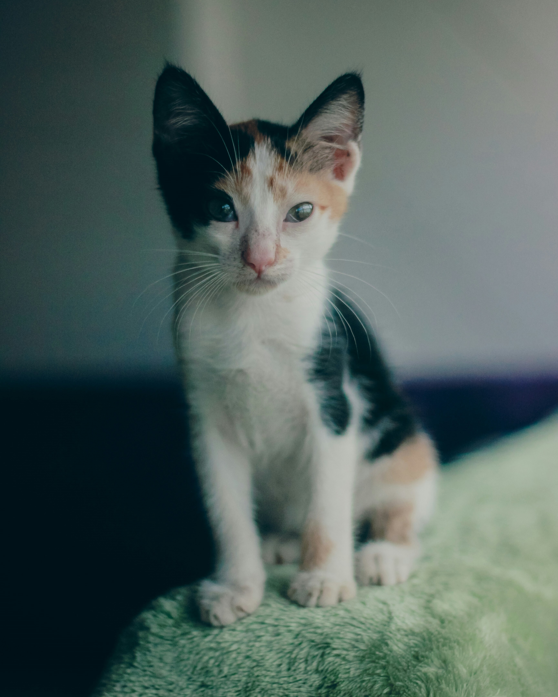
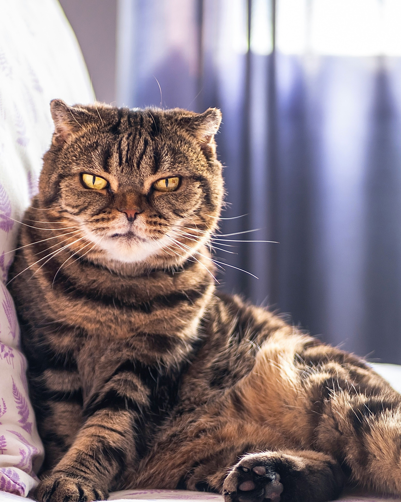
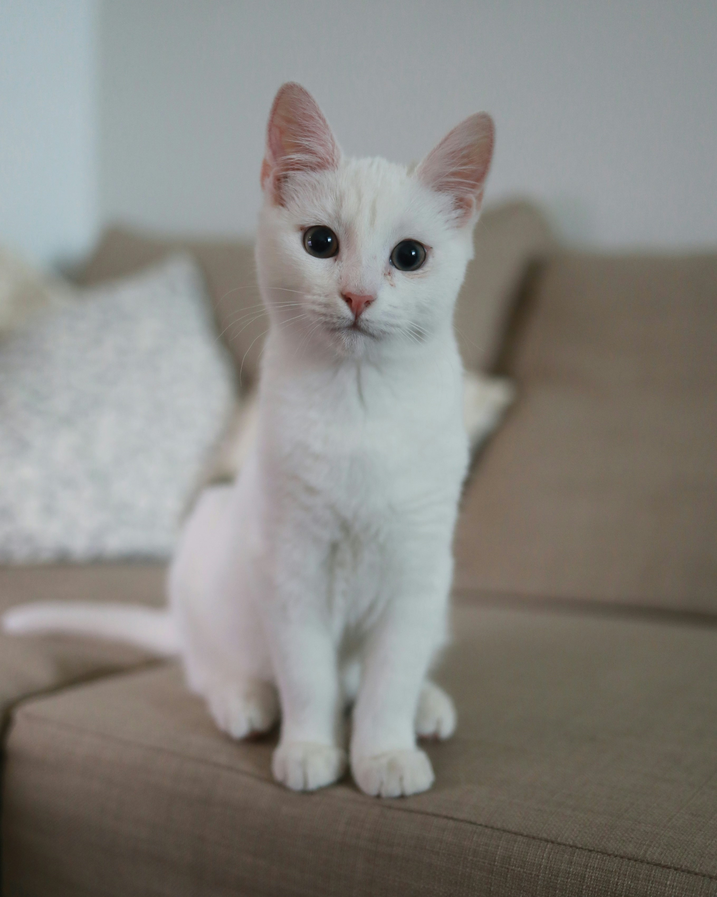

Scruffy
A fuzzball full of energy and unique coat with white, black, and orange patches. Be ready to laugh and play with this Calico boy!

Biscuit
Don't let his expression fool you — this Scottish Fold cat may seem grumpy, but he just has a RSF(Resting Serious Face). He is a calm and reserved companion who's ready to relax with you.

Angel
She has a pristine white coat, doll-like eyes, and a gentle heart. Angel loves to snuggle and offer warmth and affection that instantly lights up any room she enters.